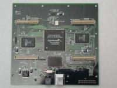

GNU Radio - The GNU Software Radio
-
October 11, 2004 - GNU Radio 2.2 now available
For additional details see http://comsec.com/wiki?GnuRadio2.X. -
July 12, 2004 - GNU Radio 2.x Alpha available for testing
Today we made the first alpha release of the GNU Radio 2.x series. It's now available for testing. For additional details see http://comsec.com/wiki?GnuRadio2.X. -
April 8, 2004 - GNU Radio 2.x feature list
There's a bottom to top rewrite of GNU Radio underway. For a preview of coming attractions, see http://comsec.com/wiki?GnuRadio2.X. -
March 31, 2004 - First Look at USRP Rev 1
We've just gotten the Rev 1 prototypes of the Universal Software Radio Peripheral back from the assembly house. Check them out on the Wiki.
. -
March 25, 2003
We now have a Wiki, a user editable web site, that provides all of us a persistent place to discuss and organize what we know about GNU Radio, software radio, comms theory, RF design and related topics. -
March 22, 2003
We've finally put together a set of Frequently Asked Questions, along with some answers using our new Wiki. If you've got new questions or answers, please add them! -
February 15, 2003
Take a look at our gallery of HDTV images!
![[HDTV Screen Shot]](images/l-and-o-bookstore-small.jpg)
- More News...
Introduction
GNU Radio is a collection of software that when combined with minimal hardware, allows the construction of radios where the actual waveforms transmitted and received are defined by software. What this means is that it turns the digital modulation schemes used in today's high performance wireless devices into software problems.
What is a Software Defined Radio?
Joe Mitola says, "A software radio is a radio whose channel modulation waveforms are defined in software. That is, waveforms are generated as sampled digital signals, converted from digital to analog via a wideband DAC and then possibly upconverted from IF to RF. The receiver, similarly, employs a wideband Analog to Digital Converter (ADC) that captures all of the channels of the software radio node. The receiver then extracts, downconverts and demodulates the channel waveform using software on a general purpose processor." [1]
For our purposes, on the receive side, the idea is to get a wide band ADC as close to the antenna as is convenient, get the samples into something we can program, and then grind on them in software.
Can you give me an example?
To get a better idea of what we're talking about, please see the screen shots and examples. They range from playing a sine wave out a speaker, a single channel FM receiver, a display of the real time Fourier transform of the signals from a high speed analog to digital converter, to an application that receives two broadcast FM stations at the same time from the same input.